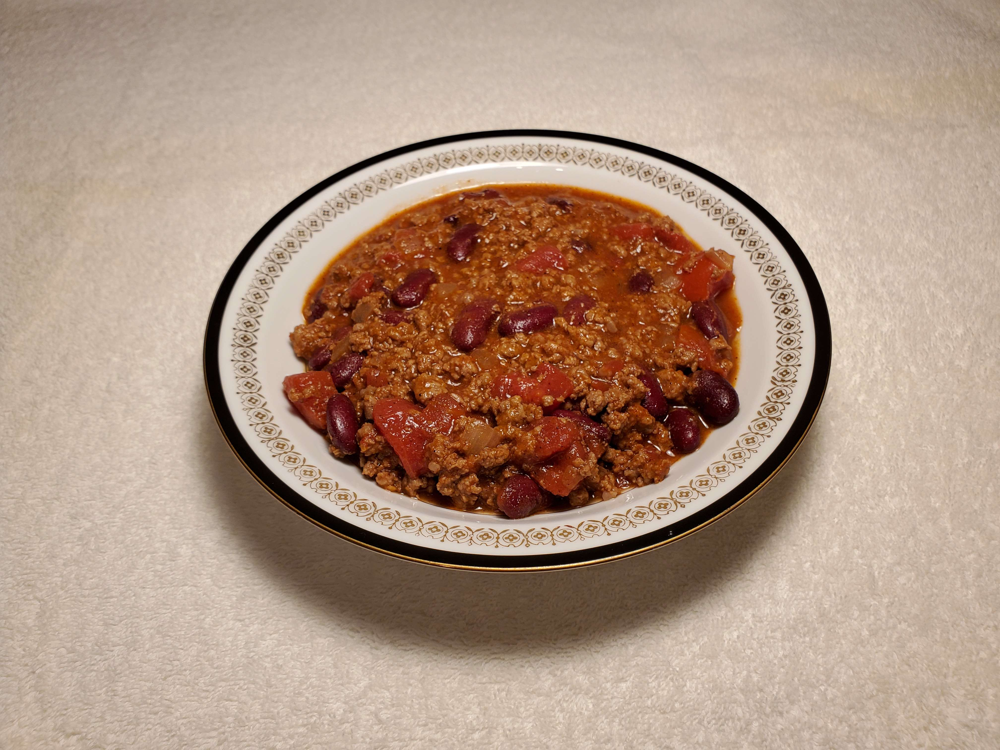

This is a recipe for "Hazel's Chili Con Carne"
Serves 4
Ingredients
- One lb. of Food Lion 93% Lean 7% Fat Ground Beef
- One 16 oz. can of Bush’s Best Dark Red Kidney Beans
- One 14.5 oz. can of Hunt’s Diced Tomatoes
- One 8 oz. can of Hunt’s Tomato Sauce
- ½ cup of chopped Onion
- 2 tsp. of chili powder
- 1 tsp. of salt
Directions
- Brown the ground beef and onions in a Dutch oven.
- Add the other ingredients, and bring to a boil.
- Turn down the heat, and simmer for 30 minutes stirring occasionally.
- Enjoy
Download Recipe